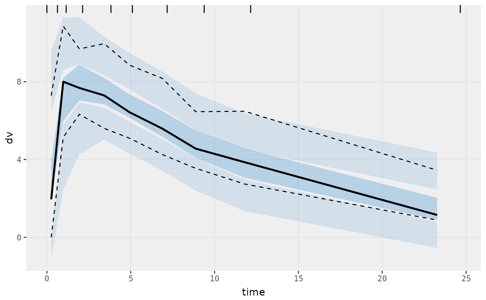

VPC based on ui model
Arguments
- ...
Additional arguments passed to
nlmixr2plot::vpcPlotTad().- idv
Name of independent variable. For
vpcPlot()andvpcCens()the default is"time"forvpcPlotTad()andvpcCensTad()this is"tad"
Examples
# \donttest{
one.cmt <- function() {
ini({
## You may label each parameter with a comment
tka <- 0.45 # Log Ka
tcl <- log(c(0, 2.7, 100)) # Log Cl
## This works with interactive models
## You may also label the preceding line with label("label text")
tv <- 3.45; label("log V")
## the label("Label name") works with all models
eta.ka ~ 0.6
eta.cl ~ 0.3
eta.v ~ 0.1
add.sd <- 0.7
})
model({
ka <- exp(tka + eta.ka)
cl <- exp(tcl + eta.cl)
v <- exp(tv + eta.v)
linCmt() ~ add(add.sd)
})
}
fit <- nlmixr2est::nlmixr(one.cmt, nlmixr2data::theo_sd, est="focei")
#>
#>
#>
#>
#> ℹ parameter labels from comments will be replaced by 'label()'
#> → Calculating residuals/tables
#> ✔ done
#> → compress origData in nlmixr2 object, save 5952
#> → compress parHist in nlmixr2 object, save 2088
vpcPlot(fit)
#>
#>

# }